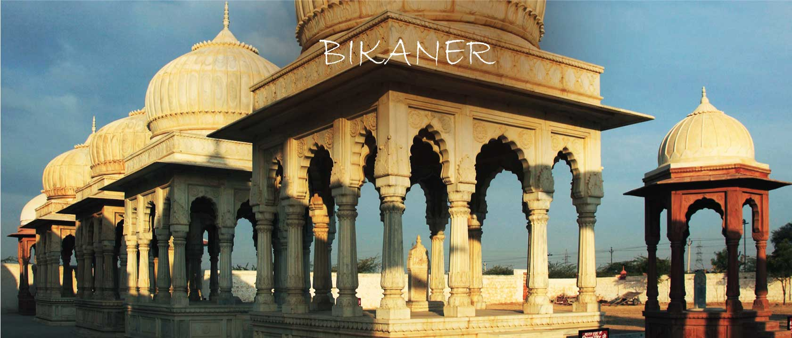
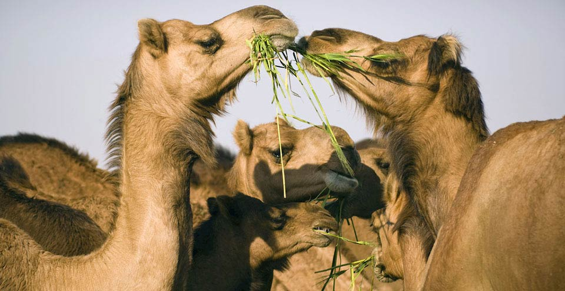
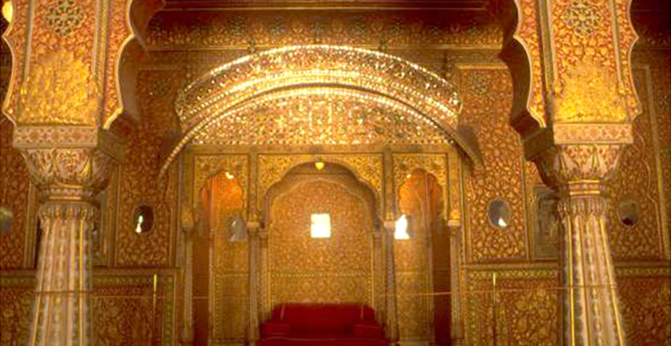
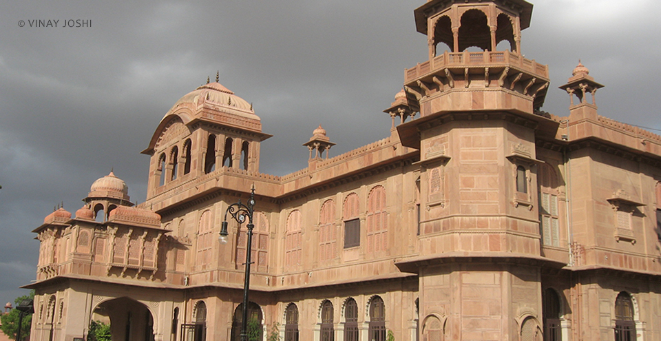
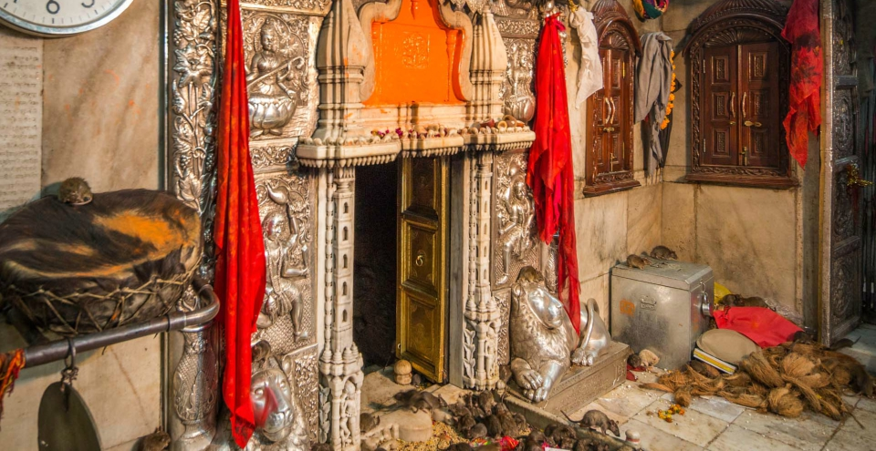
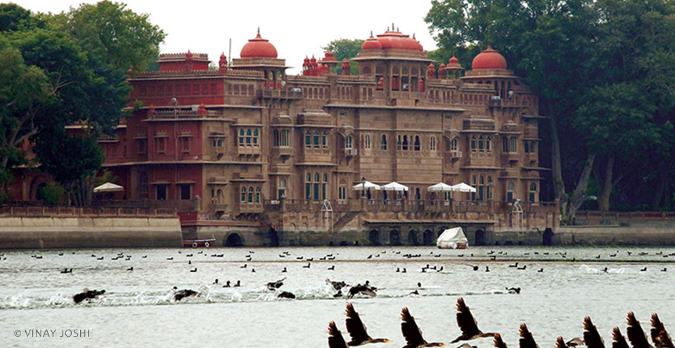

BIKANER
WELCOME TO CAMEL COUNTRY
Bikaner is home to one of the only two models of the biplane used by the British during World War I. They were presented by the British to Maharaja Ganga Singh, then ruler of the city. Another unique aspect about Bikaner are the sand dunes that are scattered throughout the district, especially from the north-east down to the southern area. Bikaner is situated in the northern region of Rajasthan. One of the earlier established cities, Bikaner still displays its ancient opulence through palaces and forts, built of red sandstone, that have withstood the passage of time. The city boasts of some of the world’s best riding camels and is aptly nicknamed ‘camel country’. It is also home to one of the world’s largest camel research and breeding farms; as well as being known for having its own unique temple dedicated to Karni Mata at Deshnok, called the Rats Temple.
The origins of Bikaner can be traced back to 1488 when a Rathore prince, Rao Bikaji, founded the kingdom. Legend has it that Bikaji, one of Rao Jodhaji’s five sons, left his father’s Durbar in annoyance after an insensitive remark from his father, the illustrious founder of Jodhpur. Bikaji travelled far and when he came upon the wilderness called Jangladesh, he decided to set up his own kingdom and transformed it into an impressive city.
ATTRACTIONS & PLACES TO VISIT AND EXPLORE IN BIKANER

NATIONAL RESEARCH CENTRE ON CAMEL
The National Research Centre on Camel is 8 kilometres from the city. This camel research and breeding centre is the only one of its kind in Asia. The centre is spread out over 2000 acres of semi-arid land and is managed by the Government of India.Camel festival is also celebrated in bikaner at a very grand level.

JUNAGARH FORT
Junagarh is an impregnable bastion that holds the distinction of having never been captured. It was constructed in 1588 AD by Raja Rai Singh, one of Emperor Akbar’s most distinguished generals. The fort complex houses some magnificent palaces constructed in red sandstone and marble and visitors can feast their eyes on an attractive assortment of courtyards, balconies, kiosks and windows.

LALGARH PALACE AND MUSEUM
Maharaja Ganga Singh commissioned the construction of this majestic palace. This architectural marvel is made entirely of red sandstone and was built in 1902 to commemorate his father, Maharaja Lal Singh. The design was conceptualised by Sir Swinton Jacob, who created this oriental fantasy by blending Rajputana, Islamic and European architecture.

RAMPURIA HAVELI
Bikaner has several havelis (aristocratic homes), the most famous cluster being the Rampuria Group of Havelis. Built of dulmera (red) stone, every aspect of the havelis – jharokhas (casements), entrances, latticed windows, divankhanas, gumaharias or basements – is simply exotic. Leaves and flowers decorate every jharokha, lending it a pleasant touch.

PRACHINA MUSEUM
Located in the great Junagarh Fort, this museum hosts royal costumes, textiles and accessories of Rajasthani royalty. The 'Poshaks' (garments worn by ladies) are a reminder of the now lost craft of traditional designs, styles and workmanship. The family portraits on display narrate a story about how changing cultural settings influenced the style of immortalising the former rulers.

DESHNOK KARNI MATA TEMPLE
The Karni Mata Temple at Deshnok is a beautiful structure made of stone and marble, inside which resides an image of Karni Mata. The image is decorated with a ‘mukut’ (tiara) and garlands. The images of her sisters and the sisters of Avad Mata give her company on either side. The temple is known the world over for the presence of kabas (rats) that roam freely within the temple precincts.

GAJNER PALACE AND LAKE
Gajner is an incomparable jewel of the Thar. The Gajner Palace was founded by Maharaja Gaj Singh ji of Bikaner in the year 1784, and then completed by the great Maharaja Ganga Singh of Bikaner on the banks of the lake. It was meant to serve as a hunting and relaxing lodge for the royal family as well as for visiting guests. It has now been converted into a hotel.

KODAMDESAR TEMPLE
24 kilometres from Bikaner is the Kodamdesar Temple. Kodamdesar Bhainru Ji was installed by Rao Bikaji sometime during the first three years of his arrival from Jodhpur. This place of worship was initially chosen as the site to lay the foundation of Bikaner, but was later shifted to its present location.
HOW TO REACH HERE
The nearest airport is Civil Airport at Jodhpur which is 253 kilometres away.
The bus stand is north of the city centre. There are frequent express buses to Agra, Ahmedabad, Ajmer, Barmer, Delhi, Jaipur, Jaisalmer, Jhunjhunu, Jodhpur, Kota and Udaipur.
Bikaner has railway connections to several destinations in India including Jaipur, Jaisalmer, Churu, Jodhpur, Delhi, Mumbai, Kolkata, Guwahati etc.